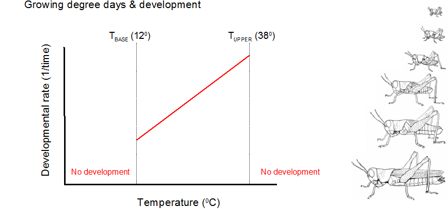
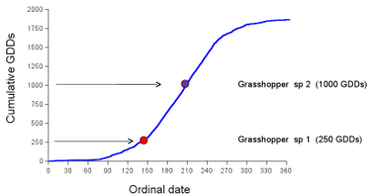

Growing Degree Days
Growth and development in plants and invertebrates is temperature dependent. At one extreme, development does not occur unless temperatures exceed a lower base temperature (TBASE) and at the other extreme, development ceases as temperatures exceed an upper threshold (TUPPER) (Trudgill et al. 2005). In its simplest form, the rates of growth and development are expected to increase as temperatures exceed TBASE and approach TUPPER (Figure 1). The defined TBASE and TUPPER, which may differ between species, essentially influences how changes in heat energy will affect a range of physiological processes that influence development. Although temperature largely controls the rate of plant and insect development, factors such as rainfall and photoperiod (a measure of day length) may modify its effects.

Figure 1. The base and upper threshold temperatures for the grasshoppers
in this study are 12 °C and 38 °C, respectively. Growth and development
begin after temperatures exceed 12 °C and increase until 38 °C is exceeded.
Growing degree days (GDDs) is a term used to define the average number of temperature degrees above TBASE that occur over a given 24 hour period. That is, 2 GDDs simply reflects a day in which the average daily temperature exceeded the minimum threshold (TBASE) by 2 degrees. In turn, The number of GDDs recorded during a day is an estimate of the energy that is available to a given organism for growth and development. On days with a low number of GDDs little development may occur, while warmer days (associated with a greater number of GDDs) may provide more heat energy and thus increase the rate of development.
The number of GDD is calculated by subtracting the TBASE from the average daily temperature.
| GDD = | Tmax + Tmin | – TBASE |
| 2 |
Where Tmax is the hottest part of the day and Tmin is the coldest part of the day. For example, if Tmax is 34 °C and Tmin is 16 °C, then for grasshoppers (TBASE =12) we would expect:
| GDD = | 34 + 16 | – 12 | = 13 |
| 2 |
In practice, if the daily mean temperature is less than the base temperature, then the GDDs for that day is zero as the organism would not experience negative development.
While the number of GDDs is a measure of the heat energy available for development, this measure becomes more important when we realize that biological events typically occur after a required number of GDDs are reached. For example, a certain grasshopper may require 250 GDDs to develop into adulthood. As such, to predict the date at which this grasshopper will become an adult, using daily temperature data we can add up the number of GDDs that occur each day until we reach 250 GDDs (i.e. 13+12+8+11+12+0+5+14+13+7+5 etc.). Below is an example of what the accumulated number of GDDs might look like during a given year at a certain area (Figure 2).

Figure 2. Maximum temperatures begin to exceed the lower temperature threshold
(in this case TBASE = 12°C) at about day 80. By keeping track of the GDDs
that accumulate daily, we can predict when a grasshopper that requires 250
GDDs and a second that requires 1000 GDDs will become adults.
GDDs accumulate very little during the early months of the year and increase during the spring and summer months (Figure 2). Fall and winter, GDDs accumulation rates decline as days may not exceed the lower developmental threshold and this means that there is little thermal energy available to plants and insects for development. The use of GDD is important for agriculture, as farmers use this measure of accumulated heat energy to determine flowering and fruiting times as well when their crops should be ready for harvest. In turn, farmers may also use this information to determine when they should apply pesticides or other control methods based on when the insect pests reach a given vulnerable, or otherwise important, developmental stage.
Elaboration on the simple GDD Method
In this lab, we will use the simple method elaborated on above to determining GDD accumulation patterns at our study sites. However, it is important to note that this simple method has been elaborated on by researchers who try to take into account the specific biology of an organism or how heat units may more accurately accumulate over a day. As such, it is important to be aware of the method that is being used when evaluating information about GDDs. For more information on these methods (not required for the lab) see the following links:
http://www.oardc.ohio-state.edu/gdd/glossary.htm
http://www.ipm.ucdavis.edu/WEATHER/ddconcepts.html